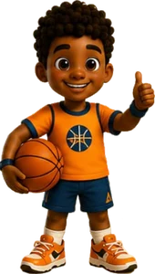

Sugerida pela IAEsportivo8–10 anos
No basquete, quantos pontos vale uma cesta feita de fora da linha de três?
- A1 ponto
- B2 pontos
- C3 pontos
- D4 pontos
Explicação: arremessos de fora da linha de três pontos valem 3; os de dentro valem 2.
Cadastro dos alunos da unidade. Dados pessoais ficam só na edição, nunca na lista.
| Nome | Matrícula | Unidade | Turma | Faixa etária | Aprovação do responsável | Ações |
|---|---|---|---|---|---|---|
| Ana Rocha | ALU-4F82K1Q9ZT | Centro | Manhã A | 8–10 anos | Aprovado | Editar |
| Bia Costa | ALU-9KD20LMX4A | Centro | Tarde B | 11–12 anos | Aprovado | Editar |
| João Silva | ALU-2B7QW8EE1C | Sul | Manhã A | 6–7 anos | Pendente | Editar |
| Lucas Moura | ALU-7TT31PZQ0N | Sul | Tarde B | 13–14 anos | Aprovado | Editar |
| Pedro Lima | ALU-5MN88CCJ2R | Centro | Manhã A | 8–10 anos | Pendente | Editar |
Todos os campos são obrigatórios. Unidade: Centro.
XP e nível de cada aluno. Clique no nome para ver a ficha.
| Nome | Turma | Faixa etária | XP | Nível |
|---|---|---|---|---|
| Bia Costa | Tarde B | 11–12 anos | 2.480 | 10 · Guardião |
| Ana Rocha | Manhã A | 8–10 anos | 1.320 | 6 · Aventureiro |
| Pedro Lima | Manhã A | 8–10 anos | 640 | 3 · Explorador |
| João Silva | Manhã A | 6–7 anos | 410 | 2 · Curioso |
| Tipo | Respostas | Acertos | Aproveitamento |
|---|---|---|---|
| Ambiental | 42 | 36 | 86% |
| Conhecimento | 38 | 27 | 71% |
| Esportivo | 30 | 27 | 90% |
 Cultural Cultural | 21 | 12 | 57% |
 Diversidade Diversidade | 18 | 13 | 72% |
Toda questão nasce como rascunho e só chega ao jogo depois de aprovada.
| Enunciado | Tipo de quiz | Faixa etária | Status | Ações |
|---|---|---|---|---|
Qual destas atitudes ajuda a economizar água em casa? Equipe · 03/11/2026 | Ambiental | 6–7 anos | Aprovada | Editar |
Quantos jogadores de cada time ficam em quadra no vôlei? IA · revisada por Marina · 08/11/2026 | Esportivo | 8–10 anos | Rascunho | Editar |
Quanto da água do planeta é doce e pode ser bebida? Equipe · 05/11/2026 · Evento Dia da Água | Ambiental | 8–10 anos | Aprovada | Editar |
Qual instrumento é típico do frevo pernambucano? Equipe · 01/11/2026 | Cultural | 11–12 anos | Aprovada | Editar |
O que significa a sigla “www” em um endereço de site? IA · 10/11/2026 | Conhecimento | 13–14 anos | Rascunho | Editar |
Três passos. A prévia ao lado mostra exatamente o que o aluno vai ver no jogo.
A IA sugere, a equipe decide. Nada gerado chega ao jogo sem aprovação humana.
3 de 5 · aprovadas viram “Aprovada”, editadas viram “Rascunho”
No basquete, quantos pontos vale uma cesta feita de fora da linha de três?
Explicação: arremessos de fora da linha de três pontos valem 3; os de dentro valem 2.
Qual esporte coletivo usa uma bola oval e é jogado com as mãos e os pés?
Explicação: o rúgbi usa bola oval; ela pode ser carregada nas mãos e chutada.
Toda vez que o aluno abre as curiosidades, o jogo sorteia uma de cada tema deste banco. Só as aprovadas entram no sorteio.
Um cartão por personagem, sorteado a cada abertura
Você sabia?Ambiental · com a Flora
O beija-flor bate as asas mais de 50 vezes por segundo.

Você sabia?Conhecimento · com o Byte
A luz do Sol leva cerca de 8 minutos para chegar à Terra.
Você sabia?Cultural · com a Luna
A capoeira é patrimônio cultural da humanidade, reconhecida pela UNESCO.

Você sabia?Esportivo · com o Max
O Brasil é o único país que jogou todas as Copas do Mundo de futebol masculino.

Você sabia?Diversidade · com a Lia
Existem mais de 7 mil línguas faladas no mundo.
Quanto mais curiosidades aprovadas, menos repetição para o aluno
Cultural15aprovadas · 4 rascunhosEsportivo4aprovadas · 1 rascunhoPoucasDiversidade20aprovadas · 0 rascunhos| Curiosidade | Tema | Status | Ações |
|---|---|---|---|
O beija-flor bate as asas mais de 50 vezes por segundo. Equipe | Ambiental | Aprovada | Editar |
A luz do Sol leva cerca de 8 minutos para chegar à Terra. IA · revisada por Marina | Conhecimento | Aprovada | Editar |
Uma partida de basquete profissional é dividida em 4 tempos. IA | Esportivo | Rascunho | Editar |
O frevo, de Pernambuco, também é patrimônio cultural da humanidade. Equipe | Cultural | Aprovada | Editar |
A Libras é reconhecida por lei como língua no Brasil desde 2002. IA | Diversidade | Rascunho | Editar |
Sugestões curtas, verificáveis e adequadas à idade. A equipe aprova cada uma antes de ela entrar no sorteio.
2 de 10 · Esportivo
Uma partida de basquete profissional é dividida em 4 tempos.
Fonte sugerida: regras oficiais da modalidade. Confira antes de aprovar.
No vôlei, cada time tem 6 jogadores em quadra ao mesmo tempo.
Fonte sugerida: regras oficiais da modalidade. Confira antes de aprovar.
Dois passos. Ela entra no sorteio do tema assim que for aprovada.
Eventos com prazo e perguntas próprias. Enquanto o evento está ativo, o local do evento no mapa do jogo mostra só as perguntas dele.
| Evento | Tema | Perguntas | Término (Brasília) | Situação | Ações |
|---|---|---|---|---|---|
| Dia da ÁguaCada gota conta: responda e ganhe o selo especial | Ambiental | 12 | 22/03/2027 18:00 | Ativo | Editar |
| Festival da PrimaveraResponda e ganhe o selo especial | Ambiental | 8 | 21/11/2026 18:00 | Ativo | Editar |
| Copa da VilaSemana dos esportes | Esportivo | 10 | 30/10/2026 17:00 | Encerrado | Ver |
Ativo até 22/03/2027 às 18:00 (horário de Brasília). As perguntas abaixo só aparecem no local do evento.
Os 18 espaços da FUNDHAS em São José dos Campos. Toque num ponto do mapa para ver como o jogo está vivo naquela unidade.
18espaços
13com turmas no jogo
0alunos ativos
0respostas na semana
Endereços e telefones de fundhas.org.br · números do jogo são de exemplo
3 administradores cadastrados · um por unidade
| Usuário | Unidade | Situação | |
|---|---|---|---|
| carla.mendes | carla.mendes@exemplo.org | Unidade Centro | Ativo |
| rafael.souza | rafael.souza@exemplo.org | Unidade Sul | Ativo |
| teresa.alves | teresa.alves@exemplo.org | Unidade Norte | Inativo |

Informe o e-mail cadastrado. Se ele existir, enviaremos as instruções.